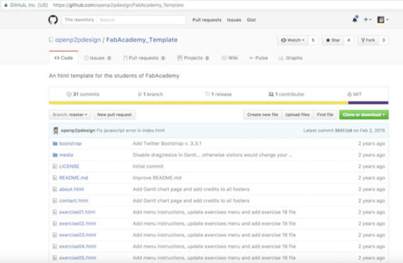
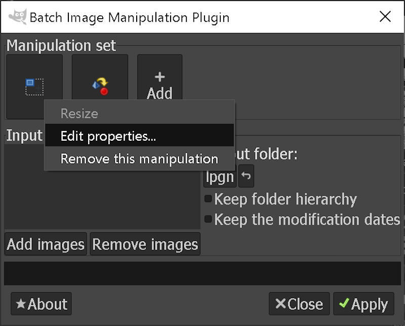

Project Management
Individual assignment
- Build a personal site describing you and your final project.
- Upload it to the class archive. Work through a git tutorial.
Learning outcomes:
- Explore and use website development tools
- Identify and utilize version control protocol
Have you:
- made a website and described how you did it
- introduced yourself
- documented steps for uploading files to archive
- pushed to the class archive
Software Used
- git
- ncdu
- gimp
- bimp
- cmd
- brackets
- sublime_text3
- ffmpeg
Student agreement
Download it here.
Useful Links
- Fab Academy Archive
- Fab Academy Assignments and Assessment
- Gitlab 2020
- Neil's Classes Archive
- Fab Modules
- Mods
- Student Dashboard
- My Personal Website
Making a Website
Useful reminders
I keep forgetting basic stuff on HTML editing so in order to make my life easier I will start by enumerating useful codes and location of stuff like my template page:
HTML uses tags for each entry like a paragraph or a button so I enumerate the tags I will use the most while editing my pages:
ps: one should open the tag with <some tag inside here> and not forget to close the tag with </same tag inside here>
- The
<p>element is used to create a paragraph - The
<button>element is used to create a button like this - this is my exercise template page
- The code
<a href="replace with the address"> replace with content</a>like that creates a link like this that directs to another page. - The code
<p class="pic"><img src="path/path/image.jpg" alt="Description of image"></p>adds an image to the page like the ones below - Using this code
<pre class="prettyprint linenums">stuff inside here</pre>adds a terminal appearance like this:stuff inside here
- To generate tables use the HTML Table Generator
Research
To get an idea of what my site would look like I went to the 2016 Fab Academy Student Archives in order to have a look at what others have done and used the random student button.
After reviewing a few pages I found Yuji OKI's page which led me to the Fab Academy Template by Massimo Menichinelli

Using Massimo's template
On GitHub, I cloned the repository for Massimo's template page to my hard drive. Then copied its contents to a directory with my name.
Editing
The code editors I chose to use are Sublime_text3 and Brackets.
About Sublime_text3:
Sublime is great for coding, diffing, and merging two codes. I especially like to use the plugin "Sublimerge3", It lets me compare 2 files and then merge portions of the code.
About Brackets:
Most of the time that's where I code HTML. The great feature Brackets have is to update in real-time what you code into the browser page. This way every single modification can be viewed without the need to refresh.
To install it on a macOS I simply run the following terminal commands:
$ brew install --cask sublime-text
$ brew install --cask brackets
Customization of the template's CSS
CSS lets you style your HTML. This can be done in 3 ways: Inline, Internally, and externally.
As the current template uses an external method, and it's a huge time saver, that's how I went with. In some places of my website, for lack of better understanding of how CSS works I might have used inline styling.
The external style files are bootstrap.css and fabacademy.css. These files are referenced in the <head> section at the beginning of each HTML file.
So far I changed only a few settings in order to achieve the current settings and they are in the fabacademy.css file:
- The image container max-width from 920px to a variable 95%;
- The legend margin was increased from 2px to 10px
In the bootstrap.css I also did some changes as exemplified below:
- The background was changed to black by adding the code
background-color: #ffffff;in the html bracket - The text was justified, the font color and style was modified in the body bracket section with the code:
text-align: justify;
font-family: Menlo, 'Bitstream Vera Sans Mono', 'DejaVu Sans Mono', Monaco, Consolas, monospace;
color: green; - Also modified the vertical alignment of images in the img bracket with the code:
vertical-align: center;
As I had near 0 knowledge of HTML editing or CSS and to better understand HTML Prior to the above modifications I watched Massimo's lecture on HTML and CSS
Also used HTML references at w3schools.com
Website Folder Structure
Currently, the folder structure is quite simple and will need some cleanup.
Folder Structure:
- All HTML files are in the root
/folder. - An exercise template file is located here "exercisetemplate.html"
- All multimedia files or codes are in the folder
/media - All the CSS files are in the
/bootstrapfolder
The exercises or weeks are within HTML files named after the number of the week they correspond with the EX: week01.html, week01b.html. Because I am having to adapt this website to the current 2018 Fab Academy requirements I decided in order to differentiate the files adding a year number in front of the name of the file: Ex. 2018week01.html
This includes files like: STL, PNG, JPG, MP4, ZIP, etc...
current folder structure
Installing ncdu and using it in order to check for big files
In order to save space on the server as well as have a faster loading website we need to constantly make sure we don't miss big uncompressed image and video files
- On a Linux terminal type:
- Start ncdu on a Linux terminal by typing:
sudo apt install ncdu
ncdu
ncdu will open and with the up and down arrows and enter key you will be able to navigate your directories.
ncdu will classify the biggest files first and show the more hash tag characters "#" for the biggest folders or files.
In this case, the biggest file is a video file for my final project sketch
Compressing the biggest files
For the video file we will use ffmpeg
- Start by installing ffmpeg on a Linux terminal:
- Next run ffmpeg on the big video file as per my example:
sudo apt install ffmpeg
ffmpeg -i input_video -vcodec libx264 -b:v 1000k -vf scale=-2:720 -an output_video.mp4
The code above should give you a 720p video without audio for more examples check Neil's ffmpeg cheatsheet
For the images you can use a software called Gimp and a plugin called bimp.
- On a Windows administrative shell run:
- Then download bimp from its website and then install it so you can run it under gimp.
- After installation is finished run gimp and select the batch image Manipulation plugin
- In order to load a previous set or to save a new one you have to press the Add button then select the desired operation
- In my case since I had the set saved already I selected "load set"
- Then select the set, in my case "readyforweb.bimp"
- In order to create or modify the behavior of the plugin click on the add to add a process or click on one of the ones you have saved prior
- Inside the resize set I selected the options I wanted specifically the width to 800px
- Then I went to the other process and opted for 75 compression ratio as well as convert the format to jpeg
- Then I selected all images I needed to convert at once and applied the changes
- Next copy converted images to your folder if you did not specify it before.
I use a package managing software called Chocolatey in order to install some Windows software.
It works similarly to apt but for Windows.
choco install gimp



Installing and using git
First I am using macOS. With that in mind and with many possible terminal applications to be installed it's useful to have Brew it helps with all installations one needs to do on Terminal and desktop.
To install open terminal and run:
$ /usr/bin/ruby -e "$(curl -fsSL https://raw.githubusercontent.com/Homebrew/install/master/install)"
Next install Cask it helps installing desktop app
$ brew tap caskroom/cask
Next install Github desktop that will include Git as well
$ brew install --cask github
Working with your Repository
Now that I have the website set locally it's time to upload it to the Fab Academy repository.
To do that I will have to save my public ssh key into the Fab Academy's gitlab website it will let me access it using git without the need to type my password every time. After that, it's necessary to clone your repo to the local drive to start working on it.
A source of info on how to do it is at the ssh help at gitlab, following is how I did it.
Step-by-step instructions:
- Since I previously had installed git I go ahead to the directory I want to work and create an ssh key with:
- After a while, a message will ask to either leave the location and name of the new SSH key as default or make a new one. I chose a new typing a location and a new file name.
- Show your ssh key running
- Next you can select the text on the screen that will look like this
- Because my key is not default I need to let the SSH agent know where it is typing:
- Next is to load the public key to gitlab and copy your repo ssh key address, in case you do not know it. Go to gitlab.fabcloud.org
- Login with the fablabs.io
- Locate your lab and then your student name;
- There you can copy your repo ssh address by switching html to ssh.
- Next add your key to your user profile
- Now it's time to clone your repo and start with the "mantra"... so with your prior copied ssh address type the following
- Now that your repo is cloned locally you can either start editing your HTML right there or paste your already edited website or template in the directory created.
- Now the "MANTRA"
- First (git pull) you are updated with your origin
- Second you add all new alterations to your local branch (git add --all)
- Third you committed all changes (git commit -m yourmessagehere)
- And last you sent the commits to your origin (git push)
ssh-keygen -t rsa -b 4096 -C "your_email@domain.com"
This will generate the SSH key and the label of the key will be whatever you include inside the quotes
Generating public/private rsa key pair. Enter file in which to save the key (/Users/someone/.ssh/id_rsa):
Enter file in which to save the key (/Users/someone/.ssh/id_rsa): /Users/someone/.ssh/id_rsafab Enter passphrase (empty for no passphrase): Enter same passphrase again: Your identification has been saved in /Users/someone/.ssh/id_rsafab. Your public key has been saved in /Users/someone/.ssh/id_rsafab.pub. The key fingerprint is: SHA256:IheXdVbB4DChb7Lyo5nJPHhNyExDKAFw5kADUTMR7MU your_email@domain.com The key's randomart image is: +---[RSA 4096]----+ |XBX= . =.++o. | | =+oE . + * . | | ..o .. + . | | . oo . | | .+ooS o | | o+..+ | | ..o. | | .oo*o | | .Bo.. | +----[SHA256]-----+
$ cat ~/.ssh/id_rsafab.pub
ssh-rsa AAAAB3NzaC1yc2EAAAADAQABAAACAQDRdz+KsRwD2jgojGESZzVQNtFT0uWLGZAieKRNMy4ytav//ABgEB5eAWFTU/YfjQn2apnt+YgXC7aWfjk8Ta5/AQblQ2r/randomfakekeyrandomfakekeyrandomfakekeyrandomfakekeyrandomfakekeyrandomfakekeyrandomfakekeyrandomfakekeyrandomfakekey+rEk6OvIq5F46sKZclXdCLFbj4b9CP5wlFVWm/vq/tgeEbc701587xVCSq/7Ssqv5GNbipbq8eGElKiM4J7h1xlEJmSb06uuqk7PswQjDhV2RFHTl6sNM45qJw30y9O3WkfddFmW5nQ8roP880ef0rvvWK51nvUpmm37rIrHa+rdFpPc9U0bRZ5BhYpp/wMnVHLmZB8W/9Wf2TN0TD/H1AWjvQ1O2EJxKn7GStVGUzopCcIwt+jEjcMZRC/pRZnvEjH30FAFv5F+kYQwmsKcNuZz+qLWF8D5sjVySHSdERLJ3Y7h4ObCJt0ll5+NJ7syf1S7gCotvT910Evorq1f2jb4l6Lt1gJz7uXA03va0HhaBGTKTB0mF7NRJusotyhGWncXgNTkZOkfFQ5Ps1xAcLRmB0uMt0/3MnS7ONu/TfJVuSqYqUuuUtz9hqbke4I4JsD+X7e1a4gAvsFK/nv6Usf0m8aQ== your_email@domain.com
$ eval $(ssh-agent -s) Agent pid 9284 $ ssh-add ~/.ssh/id_rsafab Identity added: /Users/someone/.ssh/id_rsafab (/Users/someone/.ssh/id_rsafab)
git clone git@gitlab.fabcloud.org:academany/fabacademy/2018/labs/yourlab/students/yourname.git
git pull git add --all git commit -m yourmessagehere git push
This series of commands will make sure:
Git and Bash Notes:
(Notes here are to be added along the course as a cheat list of git commands)
- When I want to know info about the origin of a repo
git remote show origin
ssh-copy-id -i ~/.ssh/mykey.pub user@host
git remote add gitlab git@gitlab.fabcloud.org:Lucio/frankenlaser.git
git rev-list --reverse master | ruby -ne 'i ||= 0; i += 1; puts $_ if i % 1 == 0' | xargs -I{} git push gitlab +{}:refs/heads/master
Creating a new Repo
I wanted to include instructions on how to create a new repo and upload it to GitHub for future reference even it was not how I did
- First it's necessary to be on the working directory and then make it a git directory with:
- Next add all files to the local repo and stages them for commit
- Next needs to be committed with:
- Now create a new repository on GitHub
- Then copy the remote repository address
- Now add a remote with the copied address
- Finally push everything with:
- Notes on git:
- Notes on ffmpeg:
- Cut from ??:??:?? time to ??:??:??
ffmpeg -i videoinput.mp4 -ss 00:00:11 -t 00:00:22 -async 1 videooutput.mp4
- Same result to cut can be obtained with similar code
ffmpeg -ss 00:00:00 -to 00:00:37 -i videoinput.mp4 -c copy videooutput.mp4
- Create a gif and cut video
ffmpeg -i input.mp4 -ss 00:00:00.000 -pix_fmt rgb24 -r 10 -s 320x240 -t 00:00:10.000 output.gif
- Compress audio and video
ffmpeg -i input.mp4 -vcodec libx264 -crf 25 -preset medium -vf scale=-2:360 -acodec libmp3lame -q:a 4 -ar 48000 -ac 2 output.mp4
- Compress audio and video of all files in a certain Directory and write compressed files to another dir.
for i in *.mp4; do ffmpeg -i "$i" -vcodec libx264 -crf 25 -preset medium -vf scale=-2:360 -acodec libmp3lame -q:a 4 -ar 48000 -ac 2 "./1/${i%.*}.mp4"; done - Compress video and remove audio with -an
ffmpeg -i input.mp4 -vcodec libx264 -crf 25 -preset medium -vf scale=-2:360 -an -q:a 4 -ar 48000 -ac 2 output.mp4
- Rotate Videos 90 degrees clockwise
ffmpeg -i input.mp4 -vf "transpose=1" output.mp4
git init
git add .
git commit -m "First commit"
git remote add origin copied_address_here
git push -u origin master
And it's done